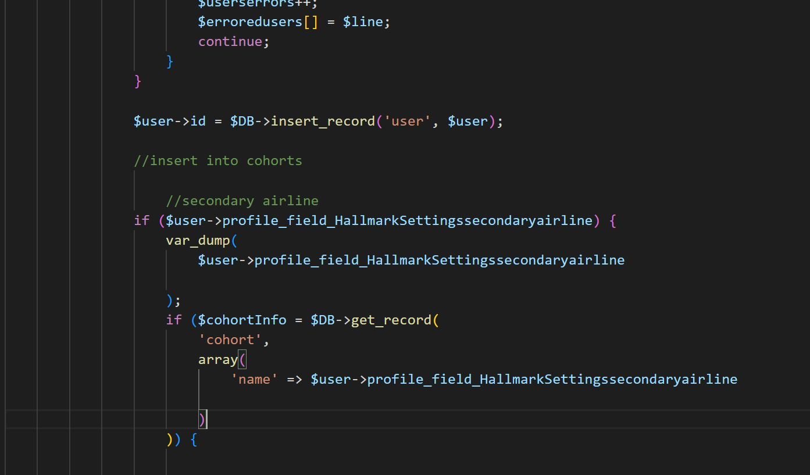

Creating new pages
using the established tools along with basic html and css to build pages in the website
assures timely distribution of information in a aesthetically pleasing format
Creating new features and templates
create new re-usable and heavily modify existing elements to fit the specification of the stake-holders
I am able to use javascript to modify the elements in a more nuanced way adding more versatility to the process;
ADA
identifying aspects of the website that impede the accessibility of the site and implementing html and styling changes to improve accessibility
I am able to go through the structure of the html to determine the exact procedure to fix the the issues

Fixing Existing coding errors
fixing long-existing errors in the base code which restored many essential functions.
which also lightened the workload of the server by restoring the proper function of the database
Creating new Features
creating new features and extending existing features, which makes administrative process faster and more convenient to use
speeds up the work process of administrators by streamlining it based on her/his preference
Database maintenance
sustained proper record keeping and correct the records by periodically checking and updating the database using Mysql scripts
assure the proper-function of the business and accurate and up-to-date record keeping